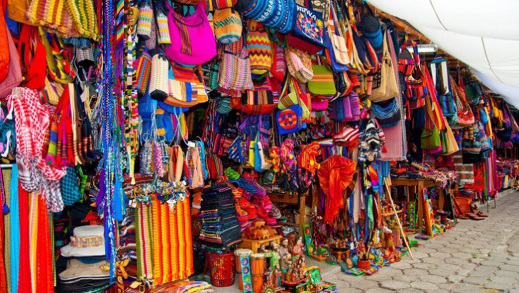
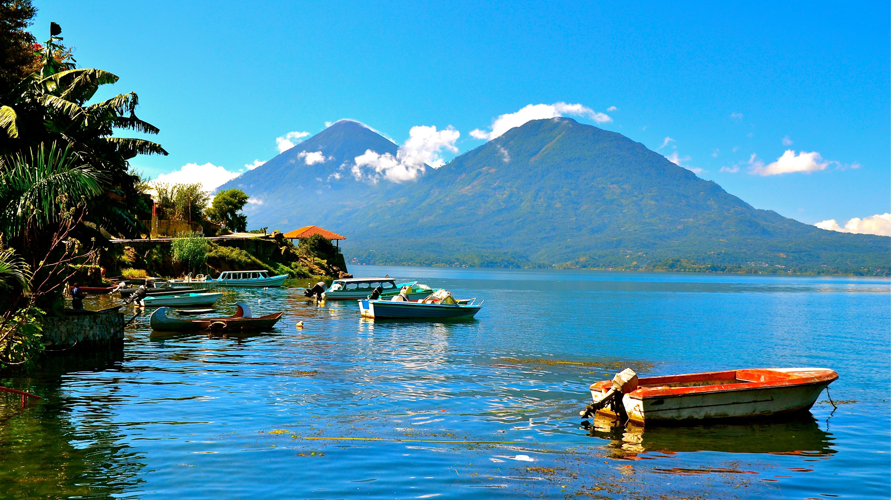

|
 |
 |  |
| Cuando vienes de la Antigua Guatemala... Cuando vienes a la Antigua Guatemala en dirección al lago de Atitlán, pasaras por el pueblo de Sololá, que todaviá está en altura, para lueo bajar al pueblo de Panajachel, que está en la costa. Panajachel es entonces el pueblo má turístico del lago, porque es donde llega todo el mundo. Luego se toma un lancha, para Santiago, Santa Catalina San Pedro o Santa Cruz.Pero por Panajachel todos pasan. La calle principal esta convertida en un gran mercadillo para los turístas. Te venden tejidos mayas, recuerdos de la región, artesanias hechas de madera o recicladas con latas de coca cola... Panajachel fue desde los años 70 una colonia de hippies. Ahora es un pueblo todavía con mucha población extranjera que vio ahí hace 5, 10, 20 años y nunca regresó a casa. Hay varios hoteles en panajachel, pero pocos de ellos están al lado del lago. Hay un gran hotal muy modernoy muy feo de dos torres inmensas, del cual no recuerd el nombre, pero personalmente prefiero irme a los demas pueblos, que son más tranquilos y agradables para dormir. Pero pana es un lugar de paso obligado, tiene un a bonita iglesia colonial, y agencias de viaje que te puede ayudar a organizar el resto de tu estancia. |
Tejedoras en Panajachel PhD Produtions, con sede en Charlotte, lanzo un disco volador de algodón y que es confeccionado por 400 mujeres mayas de una cooperativa de tejedoras de panajachel. Según Patrick Groft, uno de los dueños de la empresa, en 2011 se vendieron más de 200 mil discos en Estados Unidos en 15 diferentes tiendas de articulos deportivos, juguetes, animales, y variedades, dejando ganancias de US$2 millones. "Nuestra meta no es solo elaborar un gran producto , sino crear puestos de trabajo sostenibles, con condiciones salariales favorables de estos indigenas y, sobre todo, beneficien a las familias de la zona",dijo. Parte de las ganacias de los discos y otros productos como bolsos y cintas para la cabeza son destinados a la compra de artículos escolares y a financiar obras sociales que alivien el estado de pobreza que viven sus pobladores. El disco de bolsillo es muy popular entre los adolescentas, niños y dueños de perros. Para sacra al mercado su nuevo producto, LunaDisc, un disco con luces incrustadas, especial para festivales de noche, la empresa primero debe recaudar US$50 mil para la compra de materiales, como parte de un acuerdo de libre comercio al que están suscritos. |
Lo que hay que saber... Al llegar a Panajachel en bus o shuttle turístico, los dejarán en la calle principal de Panajachel. Sí quieren ir a pasear por el lago y los demás pueblos, tendran que viajar en lancha. Los turístas son objetos faciles para estafar para los lancheros locales y para los demás vendedores:por ejemplo no vale la pena comprar un viaje privado , cuando con algo de paciencia sale la lancha publica que les saldra mucho más barato y los llevará igual de rápido a su destino. Eso si no piensen que los están si tod el mundo no paga lo mismo: los "locales", habitantes de las orillas del lago, tiene tarífa diferente. Para los "no locales", turístas o guatemaltecos, es de Q25(tal vez haya subido hasta 30 desde la primavera pasada en la que he estado ahí). Según el pueblo al que quiera ir, tendrán que ir a uno u otro de los embarcaderos, situados a ambas puntas de la misma calle. Igua, son asequibles por la orilla del lago por si se quieren acortar el camino. Bajando a cada embarcadero, hay muchos puestos de venta de artesanías y demás cositas de recuerdos: no duden en negociar el precio! |